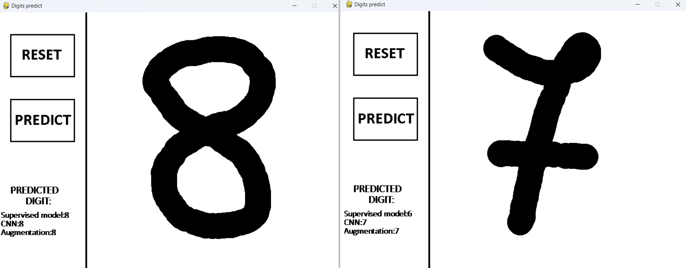

Real-time digits recognition program using various types of ML models

Digit recognition is one of the first projects undertaken when embarking on the journey into Machine Learning.
I decided to take it a step further and combine various approaches into one. I trained three different models:
- Supervised Learning: This was more of an experiment to see how well "classical" Machine Learning would perform in a Computer Vision task. I used the XGBoost algorithm.
- Convolutional Neural Network (CNN): The fundamental model for Computer Vision is the CNN.
- CNN with Data Augmentation: To enhance generalization and reduce variance, I incorporated data augmentation techniques.
For source code please visit my Github repo: